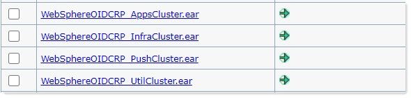
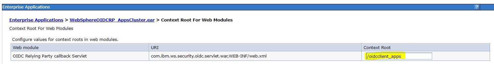
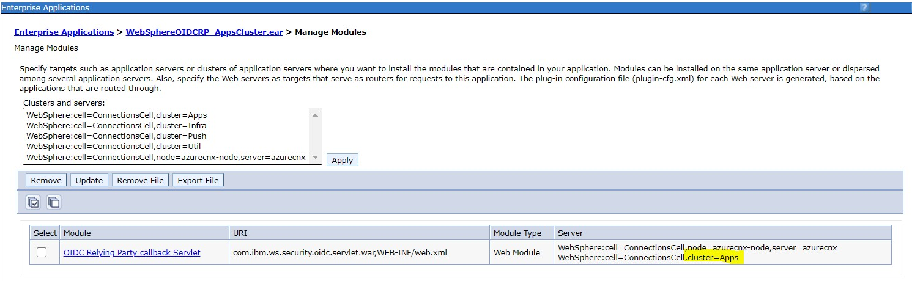
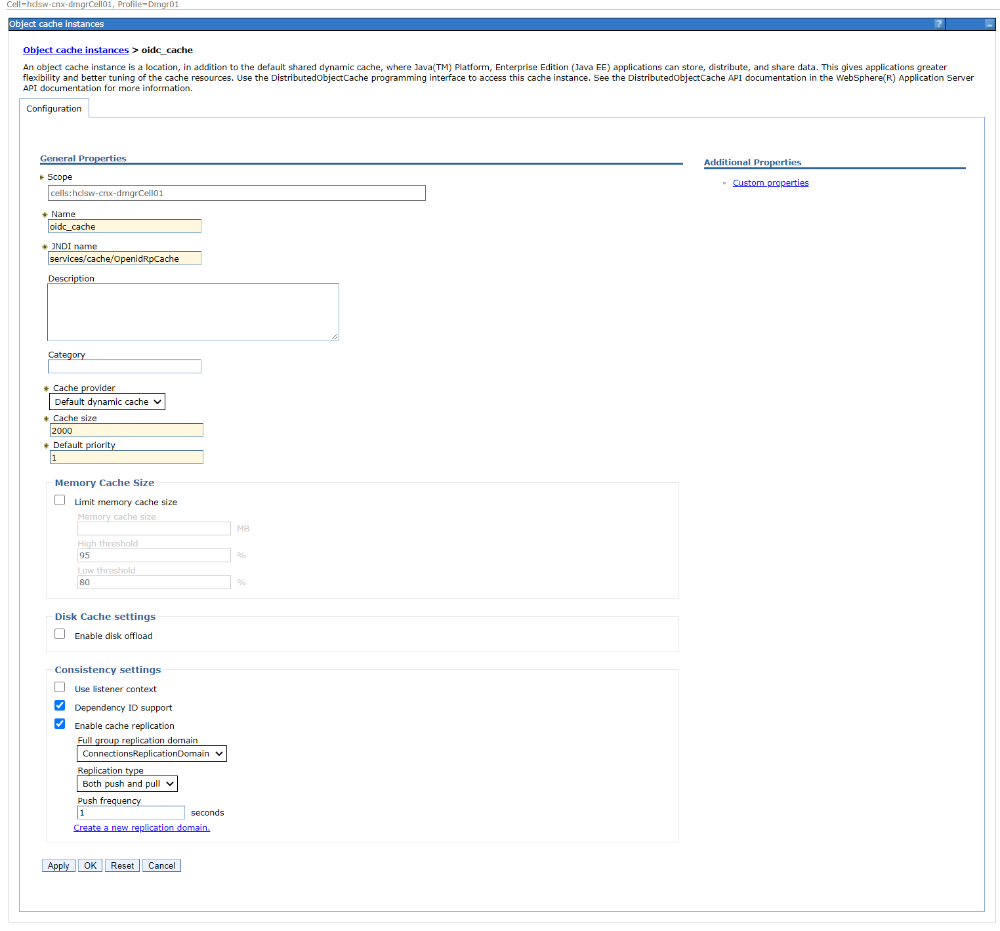
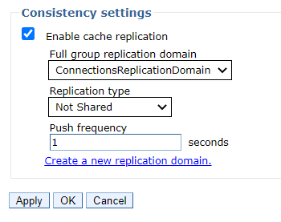

Updating WebSphere to support Azure AD OIDC authentication for Connections
Single sign-on is accomplished by setting up a trust relationship between the Connections server and Microsoft Azure using the WebSphere OpenID Connect Relying Party Trust Association Interceptor (OIDC Relying Party TAI). This requires that the WebSphereOIDCRP application is installed on each cluster.
Complete the steps in Adding an application in Azure AD for SSO with Connections, which results in values that you'll need in step 7 of the following procedure.
-
For every cluster, deploy WebSphereOIDCRP. In this example, the Connections applications are installed across the four clusters, AppsCluster, InfraCluster, PushCluster, and UtilCluster.

Note: The OIDC Replying Party TAI code is shipped as part of WebSphere Application Server. It is recommended that you are running WebSphere 8.5.5.18 which contains all required fixes. However, if you are running an earlier version of WebSphere, you must install at least version 1.3.0 of the OIDC jar. Find the latest version from https://www.ibm.com/support/pages/node/290565.
-
Apply a unique context root to each of the clusters. For example, for the Apps cluster, go to Enterprise Applications > WebSphereOIDCRP_AppsCluster.ear > Context Root For Web Modules.

-
Apply clusters to each module. For example, for the Apps cluster, go to Enterprise Applications > WebSphereOIDCRP_AppsCluster.ear > Manage Modules

-
Configure Global Security Custom Properties by clicking Security > Global security > Custom Properties and setting these properties to the following values:
Property Value com.ibm.websphere.security.disableGetTokenFromMBean
Note: If this property doesn't exist, add it.false com.ibm.websphere.security.DeferTAItoSSO com.ibm.ws.security.oidc.client.RelyingParty -
As the WebSphere administrator, in the administrative console, click Security > Global security > Web and SIP security > Trust association.
-
Click Interceptors > New to add an interceptor.
-
For the interceptor class name, enter com.ibm.ws.security.oidc.client.RelyingParty.
-
Add the following properties and values.
Note: Use the values for {client_id}, {client_secret}, and {tenant} that you copied from steps 3 and 4 of the previous procedure.
Property Value provider_1.identifier azuread provider_1.clientId {client_id} Find this value in Azure Connections application configuration provider_1.clientSecret {client_secret} provider_1.signatureAlgorithm RS256 provider_1.scope openid profile email api://{client_id}/default provider_1.interceptedPathFilter /activities/.*,/blogs/.*,/dogear/.*,/files/.*,/forums/.*,/metrics/.*,/metricssc/*,/mobile/.*,/connections/filesync/.*,/connections/filediff/.*,/mobileAdmin/.*,/storageproxy/.*,/wikis/.* provider_1.excludedPathFilter /activities/service/downloadExtended/.*,/survey/.*,/surveys/.*,/ibm/console,/ibm/console/.*,/profiles/dsx/.*,/communities/dsx/.*,/dm,/dm/atom/seedlist,/dm/atom/communities/feed,/activities/service/atom2/forms/communityEvent,/communities/recomm/handleEvent,/communities/calendar/handleEvent,/profiles/seedlist/myserver,/activities/service/atom2/forms/communityEvent,/news/web/statusUpdateEE.*,/dogear/seedlist/myserver,/news/seedlist/myserver,/communities/calendar/seedlist/myserver provider_1.authorizeEndpointUrl https://login.microsoftonline.com/{tenant}/oauth2/v2.0/authorize provider_1.tokenEndpointUrl https://login.microsoftlonline.com/{tenant}/oauth2/v2.0/token provider_1.jwkEndpointUrl https://login.microsoftonline.com/{tenant}/discovery/v2.0/keys provider_1.signVerifyAlias cnxoidccert provider_1.issuerIdentifier https://login.microsoftonline.com/{tenant}/v2.0 provider_1.userIdentifier email provider_1.useJwtFromRequest ifPresent provider_1.createSession true provider_1.verifyIssuerInIat true provider_1.audiences ALL_AUDIENCES provider_1.setLtpaCookie true provider_1.callbackServletContext /oidcclient_apps provider_2.identifier azuread provider_2.clientId {client_id} provider_2.clientSecret {client_secret} provider_2.signatureAlgorithm RS256 provider_2.scope openid profile email api://c270bc0a-0097-48d6-8e65-1728143c5c9e/default provider_2.interceptedPathFilter /connections/bookmarklet/.*,/connections/oauth/.*,/connections/resources/.*,/connections/config/.*,/communities/.*,/connections/proxy/.*,/help/.*,/xcc/.*,/selfservice/.*,/news/.*,/profiles/.*,/search/.*,/socialsidebar/.*,/touchpoint/.*,/connections/thumbnail/.*,/connections/opengraph/.*,/oauth2/.*,/connections/opensocial/.* provider_2.excludedPathFilter /activities/service/downloadExtended/.*,/survey/.*,/surveys/.*,/ibm/console,/ibm/console/.*,/profiles/dsx/.*,/communities/dsx/.*,/dm,/dm/atom/seedlist,/dm/atom/communities/feed,/activities/service/atom2/forms/communityEvent,/communities/recomm/handleEvent,/communities/calendar/handleEvent,/profiles/seedlist/myserver,/activities/service/atom2/forms/communityEvent,/news/web/statusUpdateEE.*,/dogear/seedlist/myserver,/news/seedlist/myserver,/communities/calendar/seedlist/myserver provider_2.authorizeEndpointUrl https://login.microsoftonline.com/{tenant}/oauth2/v2.0/authorize provider_2.tokenEndpointUrl https://login.microsoftonline.com/{tenant}/oauth2/v2.0/token provider_2.jwkEndpointUrl https://login.microsoftonline.com/{tenant}/discovery/v2.0/keys provider_2.signVerifyAlias cnxoidccert provider_2.issuerIdentifier https://login.microsoftonline.com/{tenant}/v2.0 provider_2.userIdentifier email provider_2.useJwtFromRequest ifPresent provider_2.createSession true provider_2.verifyIssuerInIat true provider_2.audiences ALL_AUDIENCES provider_2.setLtpaCookie true provider_2.callbackServletContext /oidcclient_infra provider_3.identifier azuread provider_3.clientId {client_id} provider_3.clientSecret {client_secret} provider_3.signatureAlgorithm RS256 provider_3.scope openid profile email api://c270bc0a-0097-48d6-8e65-1728143c5c9e/default provider_3.interceptedPathFilter /push/.* provider_3.excludedPathFilter /activities/service/downloadExtended/.*,/survey/.*,/surveys/.*,/ibm/console,/ibm/console/.*,/profiles/dsx/.*,/communities/dsx/.*,/dm,/dm/atom/seedlist,/dm/atom/communities/feed,/activities/service/atom2/forms/communityEvent,/communities/recomm/handleEvent,/communities/calendar/handleEvent,/profiles/seedlist/myserver,/activities/service/atom2/forms/communityEvent,/news/web/statusUpdateEE.*,/dogear/seedlist/myserver,/news/seedlist/myserver,/communities/calendar/seedlist/myserver provider_3.authorizeEndpointUrl https://login.microsoftonline.com/{tenant}/oauth2/v2.0/authorize provider_3.tokenEndpointUrl https://login.microsoftonline.com/{tenant}/oauth2/v2.0/token provider_3.jwkEndpointUrl https://login.microsoftonline.com/{tenant}/discovery/v2.0/keys provider_3.signVerifyAlias cnxoidccert provider_3.issuerIdentifier https://login.microsoftonline.com/{tenant}/v2.0 provider_3.userIdentifier email provider_3.useJwtFromRequest ifPresent provider_3.createSession true provider_3.verifyIssuerInIat true provider_3.audiences ALL_AUDIENCES provider_3.setLtpaCookie true provider_3.callbackServletContext /oidcclient_push provider_4.identifier azuread provider_4.clientId {client_id} provider_4.clientSecret {client_secret} provider_4.signatureAlgorithm RS256 provider_4.scope openid profile email api://c270bc0a-0097-48d6-8e65-1728143c5c9e/default provider_4.interceptedPathFilter /homepage/.*,/moderation/.*,/connections/rte/.*,/connections/webeditors/.* provider_4.excludedPathFilter /activities/service/downloadExtended/.*,/survey/.*,/surveys/.*,/ibm/console,/ibm/console/.*,/profiles/dsx/.*,/communities/dsx/.*,/dm,/dm/atom/seedlist,/dm/atom/communities/feed,/activities/service/atom2/forms/communityEvent,/communities/recomm/handleEvent,/communities/calendar/handleEvent,/profiles/seedlist/myserver,/activities/service/atom2/forms/communityEvent,/news/web/statusUpdateEE.*,/dogear/seedlist/myserver,/news/seedlist/myserver,/communities/calendar/seedlist/myserver provider_4.authorizeEndpointUrl https://login.microsoftonline.com/{tenant}/oauth2/v2.0/authorize provider_4.tokenEndpointUrl https://login.microsoftonline.com/{tenant}/oauth2/v2.0/token provider_4.jwkEndpointUrl https://login.microsoftonline.com/{tenant}/discovery/v2.0/keys provider_4.signVerifyAlias cnxoidccert provider_4.issuerIdentifier https://login.microsoftonline.com/{tenant}/v2.0 provider_4.userIdentifier email provider_4.useJwtFromRequest ifPresent provider_4.createSession true provider_4.verifyIssuerInIat true provider_4.audiences ALL_AUDIENCES provider_4.setLtpaCookie true provider_4.callbackServletContext /oidcclient_util provider_1.realmIdentifier tid provider_2.realmIdentifier tid provider_3.realmIdentifier tid provider_4.realmIdentifier tid JndiCacheName services/cache/OpenidRpCache -
Configure the Azure tenant as a trusted realm:
-
Click Security > Global security > RMI/IIOP security > CSIv2 inbound communications > Trusted authentication realms - inbound.
-
In the Realms section, click Add External Realm.
-
For the External realm name field, enter the value for {tenant}.
-
Click OK.
-
-
Create a new object cache instance with the JNDI name matching the one used in the last TAI property in the preceeding table (Resources > cache Instances > Object cache instances).

-
Go to Application servers > cluster > Container Services > Dynamic cache service, and for each clusters dynamic cache service make sure that cache replication is enabled and uses ConnectionsReplicationDomain.

-
Configure the trusted realm:
-
Click Security > Global security.
-
In the User account repository section, click Configure.
-
In the Related Items section, click Trusted authentication realms - inbound > Add External Realm.
-
In the External realm name field, enter the value for
provider_1.issuerIdentifierfrom the Interceptor. -
Click OK.
-
-
Add the root signing certificate of the Microsoft Certificate endpoint to the default trust store:
-
Click Security > SSL certificate and key management.
-
Click Key stores and certificates.
-
Select CellDefaultTrustStore and click Signer certificates.
-
Click Retrieve from port.
-
For the Host field, enter
login.microsoftonline.com. -
For the Port field, enter 443.
-
For the Alias field, enter
cnxoidccert. (You will need to use this name as a value forproperty provider_1.signVerifyAlias. ) -
Click Retrieve signer information.
-
Click OK and save the changes.
-
-
Change security role for user/group for applications:
-
Click Applications > Application types > Enterprise Applications > Application name > Security role to user/group mapping.
-
For each resource, change the permission for all roles that have "All Authenticated in Application's Realm" to "All Authenticated in Trusted Realm."
-
-
Synchronize all nodes.
-
Restart the WebSphere server.
Return to step 8 of Adding an application in Azure AD for SSO with Connections and add a redirect URI.
Then Configure Connections to support Azure OIDC.
Parent topic:Enabling single sign-on with OIDC for Microsoft Azure AD